Espero dentro de 5 años poder finalizar mi carrera universitaria, especializarme ya sea en Ciencia de Datos o Ciberseguridad. Además de esto tener una estabilidad laboral, económica, personal.
Además de esto poder viajar, conocer Suiza, Escocia y por ultimo poder asentarme en Canadá, un país maravilloso, que deslumbra en paisajes y cultura social.
También me veo recorriendo estos paisajes en moto, esta sería la BMW GS1200, la moto perfecta para el país perfecto.
 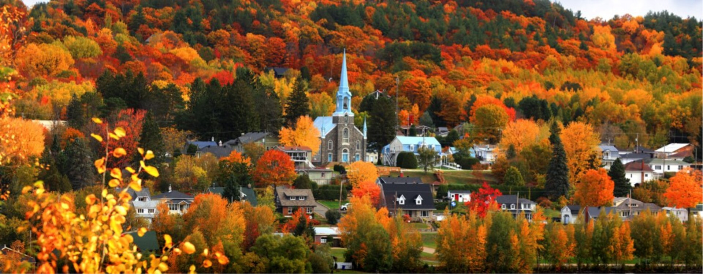
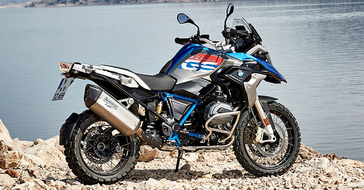
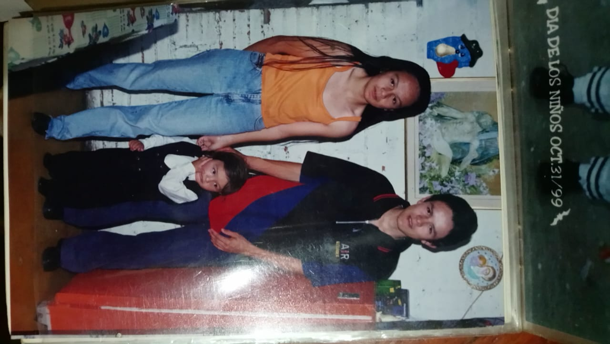
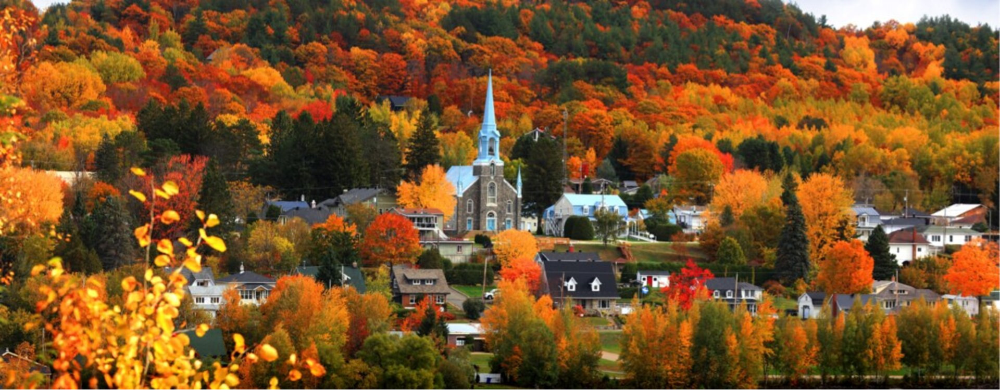
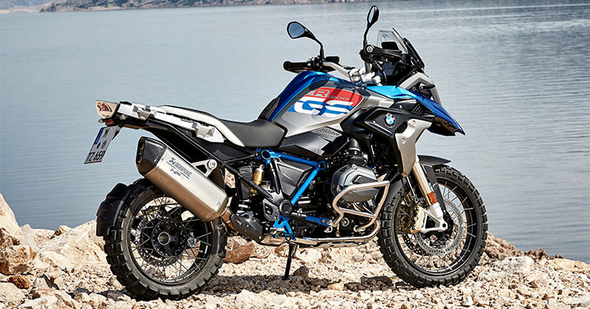
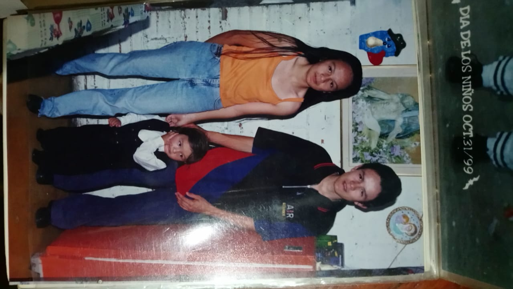
 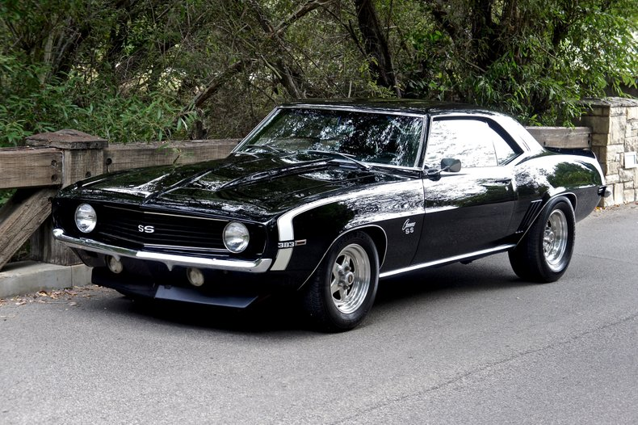
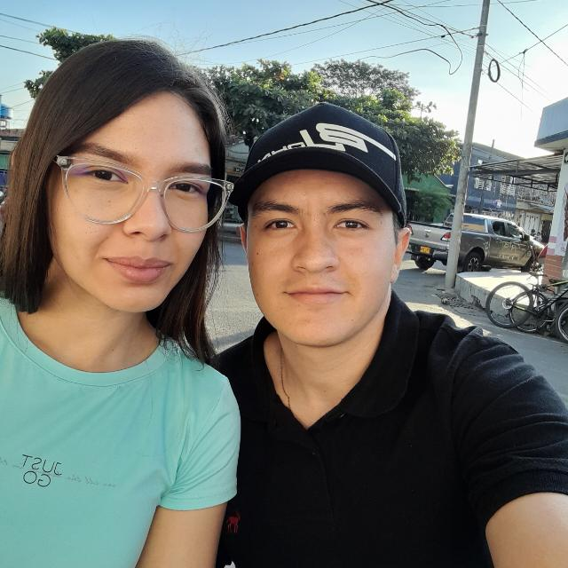
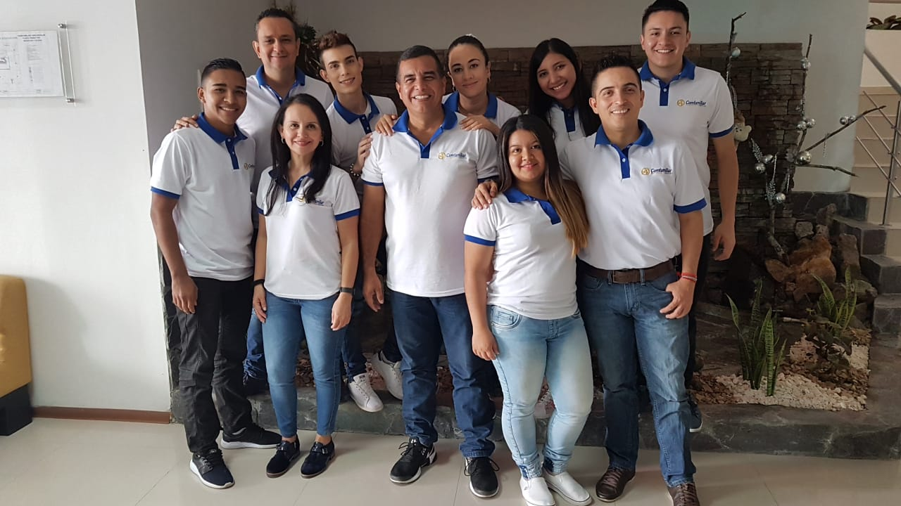
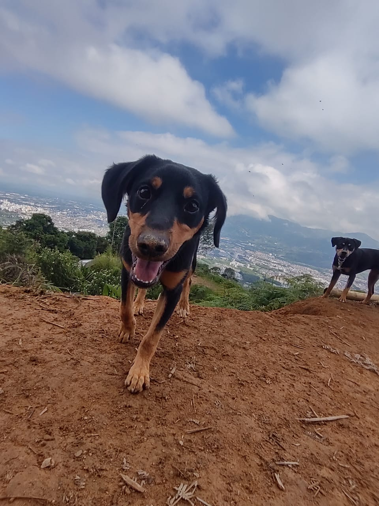
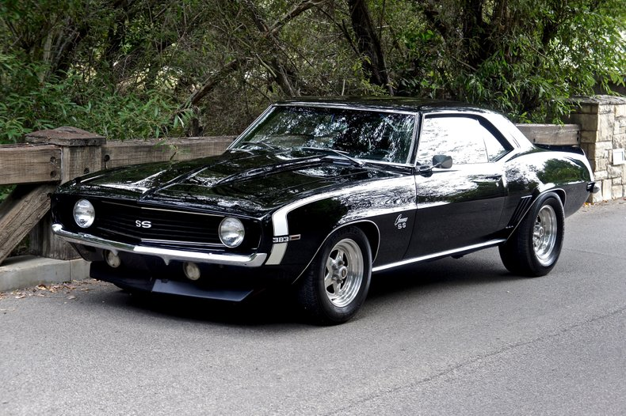
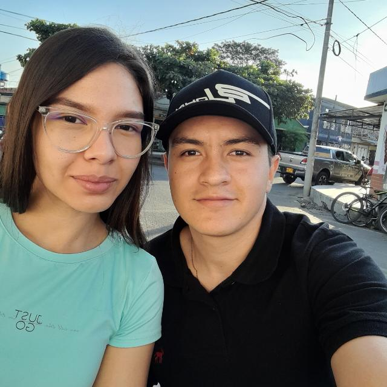
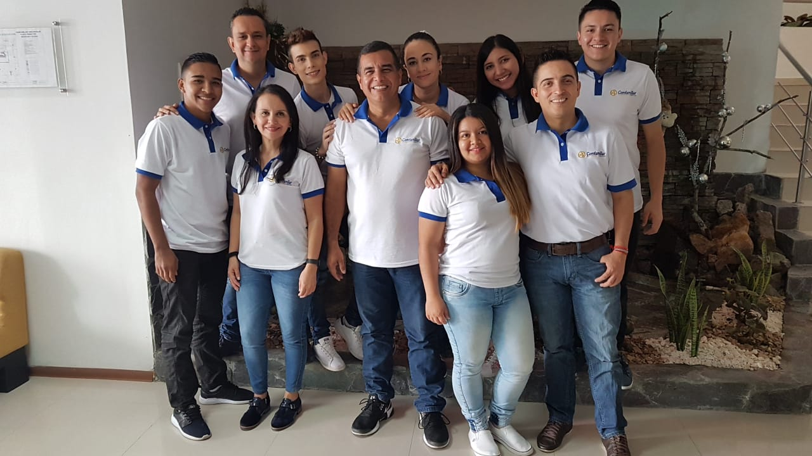
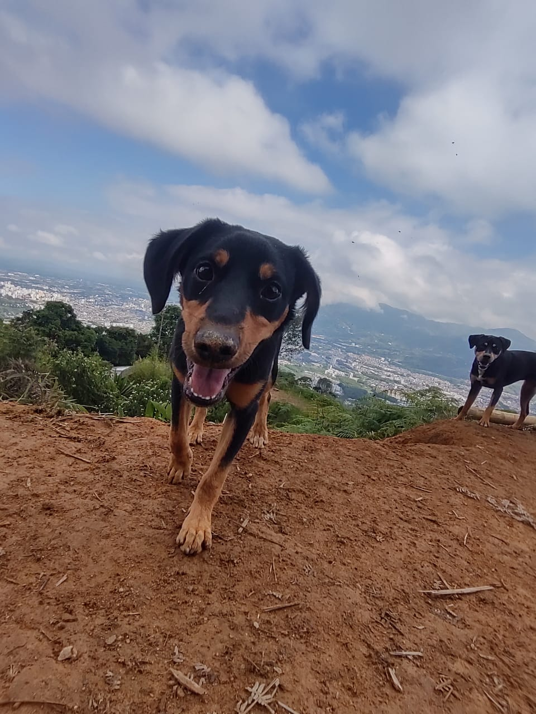